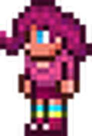

Siempre disponible
Ella tiene un 2,5% de probabilidad de aparición una vez que el jugador tenga minimo 13 / 8 NPCs y se tenga una casa disponible para que ella viva (también se aplica para reaparecer luego de morir). Ocasionalmente lanzará confeti al jugador.
La chica fiestera |
|
 |
|
Estadisticas |
|
Tipo |
NPC |
Salud |
250 |
Arma |
granada feliz |
Defensa |
15 |
Especialidad |
Vende articulos para fiestas |
Bestiario |
|
Descripcion |
Positiva más allá de la comprensión, la Chica fiestera usará cualquier excusa para celebrar. Ella venderá recuerdos festivos y luces llamativas.. |
Bioma preferido |
La bendicion |
Deja |
|
granada feliz (30-60) |
20% |
IDs internas |
|
ID de bestiario |
208 |
ID de NPC |
24 |
Cuando hay Fiesta:
Cuando te da el Trozo de pastel:
Cuando derrotas una oleada de la Ejército del Antiguo:
| Objeto | Precio | Disponibilidad |
|---|---|---|
| Pistola de confeti | 1 |
Siempre disponible |
| Confeti | 1 |
Siempre disponible |
| Bomba de humo | 10 |
Siempre disponible |
| Máquina de burbujas | 4 |
Durante el día Siempre disponible |
| Fog Machine | 4 |
Durante la noche |
| Vara de burbujas | 5 |
Siempre disponible |
| Balón de playa | 20 |
Siempre disponible |
| Lámpara de lava | 2 |
Siempre disponible |
| Plasma Lamp | 2 |
Siempre disponible |
| Caja de fuegos artificiales | 5 |
Siempre disponible |
| Fuente de fuegos artificiales | 3 |
Siempre disponible |
| Party Wagon | 10 |
Siempre disponible |
| Spectrum Kite | 2 |
Siempre disponible |
| Pogo Stick | 25 |
Siempre disponible |
| Cohete rojo | 15 |
Después de derrotar al Muro carnoso |
| Cohete verde | 15 |
Después de derrotar al Muro carnoso |
| Cohete azul | 15 |
Después de derrotar al Muro carnoso |
| Cohete amarillo | 15 |
Después de derrotar al Muro carnoso |
| Granada feliz | 2 |
Si tienes una Granada feliz en el inventario |
| Cañón de confeti | 25 |
Cuando el Pirata esta presente |
| Burbuja | 2 |
Después de derrotar al Muro carnoso |
| Bloque de humo | 1 |
Después de derrotar al Muro carnoso |
| Centro de fiesta | 20 |
Siempre disponible |
| Gorro fiestero | 1 |
Siempre disponible |
| Máquina de globo tonto | 5 |
Siempre disponible |
| Regalo | 20 |
Durante la Fiesta |
| Cerdidragonata | 1 |
Durante la Fiesta |
| Guirnalda azul | 50 |
Durante la Fiesta |
| Guirnalda verde | 50 |
Durante la Fiesta |
| Guirnalda rosa | 50 |
Durante la Fiesta |
| Globo morado tonto | 1 |
Durante la Fiesta |
| Globo verde tonto | 1 |
Durante la Fiesta |
| Globo rosa tonto | 1 |
Durante la Fiesta |
| Globo atado absurdo (morado) | 10 |
Durante la Fiesta |
| Globo atado absurdo (rosa) | 10 |
Durante la Fiesta |
| Globo atado absurdo (verde) | 10 |
Durante la Fiesta |
| Celebración | 80 |
Después de derrotar al gólem |
| Release Doves | 1 |
Al estar en un cementerio |
| Release Lantern | 1 |
Durante una noche de faroles |
| Football | 20 |
Tener una puntación de al menos 500 en golf |